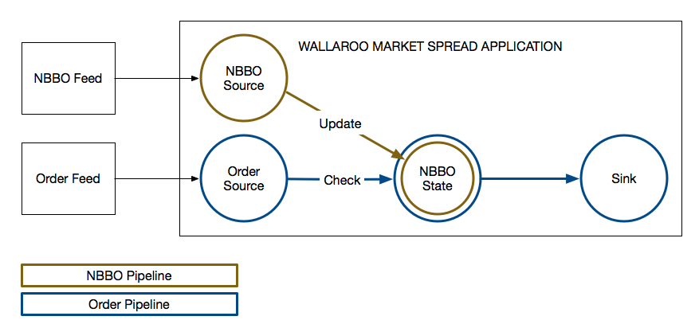

What is Wallaroo?
Wallaroo is an ultrafast and scalable data processing engine that rapidly takes you from prototype to production by eliminating infrastructure complexity. It's designed for writing distributed data processing applications, especially demanding high-throughput, low-latency tasks where the accuracy of results is important. If you are familiar with the “big data” landscape, Wallaroo includes the “streaming data” category along with tools like Storm, Heron, and Samza. However, the core engine also supports long-running analysis such as might be used for large-scale analysis and model training.
When we set out to build Wallaroo, we had a few goals in mind. We wanted to improve the state of the art for distributed data processing by providing better per-worker throughput, dramatically lower latencies, easier state management, and an easier operational experience. In this introduction, we're going to touch on some of these points but not all of them. Over the course of this guide, we will explore Wallaroo more in-depth. To that end, this introduction will:
- Take you through what Wallaroo is
- Describe the problems Wallaroo is solving
- Discuss some of the key features including integrated state management and exactly-once processing
Wallaroo by example: Market Spread
Let’s start talking about what Wallaroo can do by way of an example. One demo application is one called “Market Spread.” It’s based on a proof-of-concept we did for a large bank that was looking at ways to modernize their infrastructure. Market Spread is an application designed to run alongside a trading system. Its goal is to monitor market data for irregularities around different symbols and potentially withdraw some trades that have been sent to market should certain anomalies occur.
When we break the application down into its key components we get:
- A stream of market data, aka “NBBO Stream”
- A stream of trades, aka “Order Stream”
- State in the form of latest market conditions for various symbols
- A calculation to possibly withdraw the trade based on state for that symbol
For the proof of concept, our client was looking to handle hundreds of thousands of messages a second with median latencies measured in microseconds. Further, they needed flat, predictable tail latencies that were measured in single-digit milliseconds. While the proof of concept was only run on a single machine, the goal was to have an application that would be able to respond to ever-increasing rates of data and seamlessly scale to run on multiple machines while handling millions of messages a second.
Distributed data processing applications are hard. We know; over the course of our careers, we’ve been involved in building a lot of them. Here’s a quick checklist of things we’d need to worry about for an application like Market Spread if we were to start from scratch:
- Creating a robust communication layer between communicating processes
- Ensuring message replay occurs when a message fails to process.
- Ensuring messages aren’t processed twice on message replay
- Efficient sharding of data across multiple machines
- Optimizing computations for performance
- Minimizing administrative messages
- Minimizing data movement
- Handling message source back-pressure
- Metrics, monitoring, and telemetry
- Implementing our domain logic
That’s a lot to tackle and a lot of code to introduce bugs in. Wallaroo is, in part, an answer to that problem. It creates a robust platform that handles sharding and partitioning data across many machines. By leveraging Wallaroo, you can build demanding high-performance applications like Market Spread without having to worry about replaying messages when failures occur or deduplicating data on message replay. At-least-once message processing and idempotence come as a core part of the platform. We focus on the hard infrastructure problems, so you don’t have to. By building Market Spread using Wallaroo, the checklist becomes:
- Implementing our domain logic
Core Wallaroo abstractions
How does one go about building a Wallaroo application? Via our developer framework and its APIs which are the focus of this guide. The core abstractions from our API that we'll touch on in this introduction are:
- Computation
- Pipeline
- Source
- Sink
The most important of these is a Computation. Computations come in two varieties: stateless and stateful. A stateless computation takes some data as an input and creates some new data as an output. For example, a “double computation” might take in an integer such as 2 and output 4. A stateful computation is similar to a stateless computation except it takes an additional input: the state it will operate on. An example of a stateful computation would be a counter that keeps track of the running total of all numbers it has processed.
You can combine computations together using another abstraction we provide: Pipeline. A pipeline allows you to say, for example, that the output from computation A will be processed by computation B. A pipeline begins with a Source step, which is responsible for receiving and decoding incoming external messages. Likewise, the pipeline may end at a Sink, if it has anything to output, which encodes data and sends it to an external receiver. In this way, you can take individual computations and start turning them into applications that take in data from various external sources and ultimately produce outputs that are sent to external systems via sinks.
Market Spread in Wallaroo
Given these abstractions, what does our Market Spread application look like?

You can see we end up with two pipelines, one for our NBBO Feed and another for the Order Feed, each with its own corresponding source. We have a single type of state that we are storing (NBBO State by symbol), two stateful computations--one to Update state, another to Check it--and finally a Sink that we send any output to.
Market Spread Performance
Wallaroo has been developed to provide correct results quickly. What does quickly mean? Wallaroo is designed to process millions of events on a single machine, with median latencies that are measured in microseconds and tail latencies that are measured in single digit milliseconds. Low latencies are all well and good, but what does that mean in practice?
Performance is, in the end, highly dependent on the type of data, the computations being performed, etc. This guide isn't the place to present detailed benchmarks so let's give a quick idea of what the performance of a Wallaroo application can look like.
Let’s talk about the aforementioned Market Spread application and some recent performance numbers we’ve gotten with it. First, though, let’s highlight some key points:
- The logic is reasonably straightforward.
- The state it stores in memory remains constant in size.
- It has two streams of data, only one of which occasionally produces output that results in network traffic (1 out of 70,000).
- Messages are 50 to 60 bytes in size.
During a recent performance testing run using 16 cores on an AWS m4 class machine, we were able to run each stream of data at around 1.5 million messages per second for a total of 3 million messages per second across the two streams. Our processing latencies were:
| 50% | 95% | 99% | 99.9% | 99.99% | |
|---|---|---|---|---|---|
| <= | 66µs | 0.5ms | 0.5ms | 0.5ms | 1 ms |
Even with the application caveats that we laid out, we think that is some pretty impressive performance. Performance that we are committed to maintaining as we continue to add functionality to Wallaroo.
Exactly-once processing
We mentioned earlier that our goal is to “provide correct results quickly." The "correct" part of that statement is the most important part. Processing millions of events a second is only great if the results are accurate. We guarantee accurate results, even in the face of failure, by providing integrated managed state and exactly-once processing.
"Exactly-once" is a bit of a holy grail in distributed systems. As such, it's a heated topic and one that causes confusion. What do we mean when we say that Wallaroo provides "exactly-once processing"? In the face of failure, when messages have to be replayed to ensure that no data is lost, we won't process a message more than once. Note that this is very different from saying a message will only be delivered once. If you are a bit lost, don't worry. Hopefully, this example will help.
Imagine a counting application. It takes in numbers and adds their value to its internal state. If we send in the values 5, 10, 15 and it runs without error, we would expect the final value to be 30. Errors do, however, happen. Imagine that we sent in 5 and 10 and then an error occurs. Further, we have only acknowledged that 5 was received and processed. What do we do? If we resend 10 and it was already processed, then our final value will be 40 instead of 30. If we don’t resend and it wasn’t processed, then our final value will be 20 instead of 30.
What we want to do is ensure that each message has been delivered at least once while also ensuring that it is processed only once. In distributed system lingo this is "at-least-once message delivery" + "idempotence". By combining the two, we can guarantee that results in Wallaroo are correct even in the face of failures.